3 Chapter 3: A Case Study with Multilevel Models
3.1 Summary
3.2 Start a new conversation
If you are still running Klausmate from the previous chapter, press New conversation. This has the effect of starting Klausmate afresh whilst saving the Code Log from the previous conversation, with the means to Recall that earlier conversation under the Past conversations tab.
If you ended Klausmate before then just run klaus() in the usual way in the RStudio Console.
If you cannot see the Past conversations tab then it is because you have not yet started as second (or third, …) conversation during your current Klausmate session.
3.3 Obtaining an answer to a question
In the Your prompt window type,
Tell me about multilevel modellingThen press Answer. After a short while, a response will appear in the Answer window.
Click to open the full answer.
Take some time to read the generated answer before you proceed.
Do not confuse Answer with Ask for Code. It is Answer that you should use here.
You can, of course, use any other Large Language Model or web search to ask this sort of question without the cost of eating into your Klausmate quota.
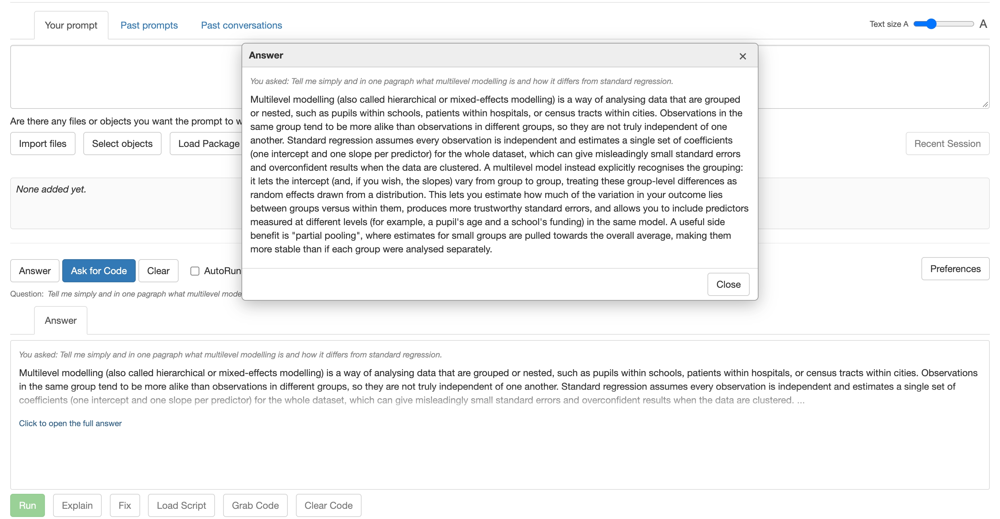
3.4 Load the package data
Use Load Package Data to add both birmingham_lsoa_2001_2011 and birmingham_lsoa_2011_2021 as context for the prompt.
In the Your prompt window type,
Tell me about the variable y_change_asinhThen press Answer (again, Answer not Ask for Code)
As before, take some time to read the generated answer before you proceed.
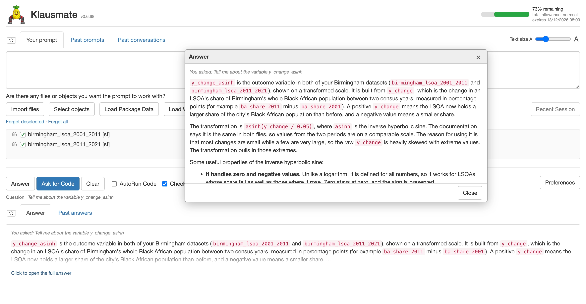
3.5 Translating answers
You can translate the answers into a different language by changing Klausmate’s default language.
Press Preferences and Change from English to another language.
Press Close.
In the Answer tab window there is now the option to Translate into [language]. Press it.
Future Answers (and Explanations) will use the same language so you may want to go back into Preferences and reset the default to English, which is the drop-down menu under Response language.
The translation is AI generated so should be treated with some caution.
The translation in Klausmate is relatively low cost but there are ways to do it for free. The web browser may offer it, for example.
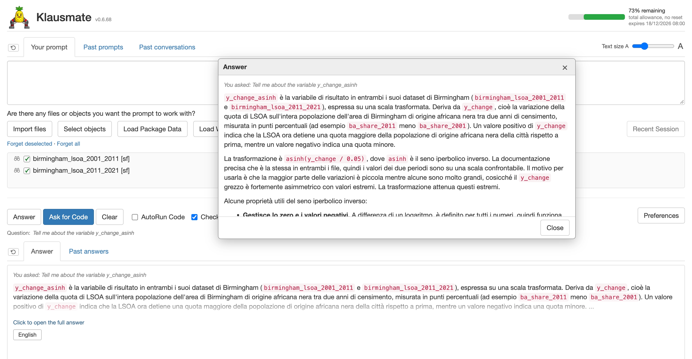
3.6 Prompt refinement
Let’s begin by aiming to plot comparative maps of the two data sets. In the Your prompt widow type the following then Ask for Code.
Using the two Birmingham data sets I’ve added, draw maps of y_change_asinh, one above the other, with a single legend shared by both. Split the values at zero and use Jenks classes on each side, with a colour-blind friendly diverging palette, and add a north arrow and scale bar.You will most likely find that the prompt is too vague. Accept the suggested changes by pressing Use this version in the Before asking for code window.
Then, Ask for Code.
Expand the Code window and take time to look through the output. Can you get a broad sense of what it is doing?
Next, Run the code.
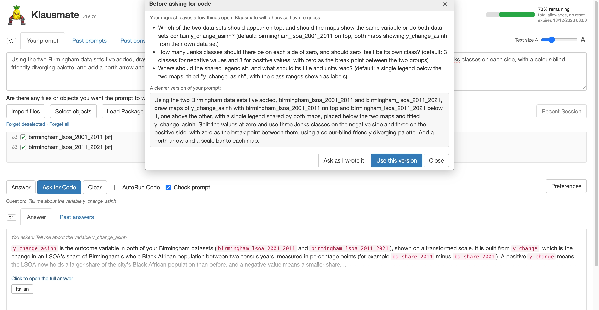
The maps are not wholly satisfying, so try…
Do not stack the maps vertically. Have them alongside each other in a 2 columns by 1 row format. Right justify the legend.… in Your prompt and Ask for Code. Accept any rephrasing that is suggested and, if required, press Ask for Code again, to generate the code.
If Changes are highlighted, take a moment to view them, then Run the revised code.
The result that I obtained was still not quite what I was looking for, so I tried…
Have one legend for both maps and make sure that neither it nor the scale bar or north arrow obscure (overplot) the map. Shows the values in the legend in descending order, with highest values are the top. …accepted the rephrasing, generated the code and ran it.
The resulting maps were closer to what I wanted but still require some refinement—see Warning below.
You could spend a lot of time and cost refining the maps, changing the prompts and the code they generate. But it is probably not a good idea because you might also find it frustrating and begin to go around in circles.
The code is only ever as good as the prompt you use and how the LLM interprets it. And that can be difficult to get right.
This points back to the purpose of Klausmate, which is not to replace your learning but to assist it.
Rather than over reliance on AI, your better way forward is to take the skeleton of the code it has generated and flesh it out yourself by manually editing the code, remembering that you can use Save Code Block to save the code and open it in RStudio for further development and testing.
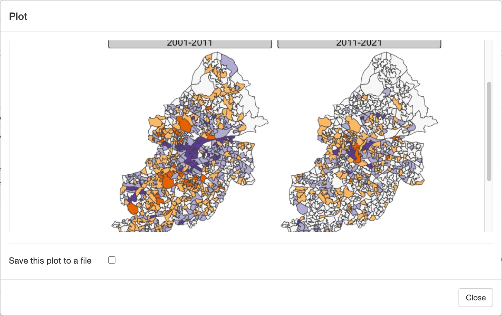
3.7 Measuring the spatial pattern
Look at any of the maps that have been generated.
Is there any evidence of a spatial pattern in where the shares of the Black African population have risen in Birmingham and where they have declined?
Has that pattern changed between 2001–11 and 2011–2022?
Do areas of increase cluster with (are found alongside) other areas of growth and/or do areas of decrease cluster with other areas of decline?
Does the strength of any clustering appear to increase or decrease over time?
Measuring spatial autocorrelation at the LSOA level
We will calculate Moran’s I to measure the spatial pattern. Type the following into Your prompt and Ask for Code:
Calculate and compare the Moran's values for y_change_asinh in 2001-11 and 2011-21 based on contiguous neighbours at the LSOA scale, using the objects birmingham_lsoa_2001_2011 and birmingham_lsoa_2011_2021. Restrict the analysis to the LSOAs present in both objects so the two values are directly comparable, define contiguity using queen adjacency (shared edge or corner), and report each Moran's I value together with its p-value from a permutation test.You may find the Klausmate offers you a choice of package to use, in which case accept its recommendation and Use this package.
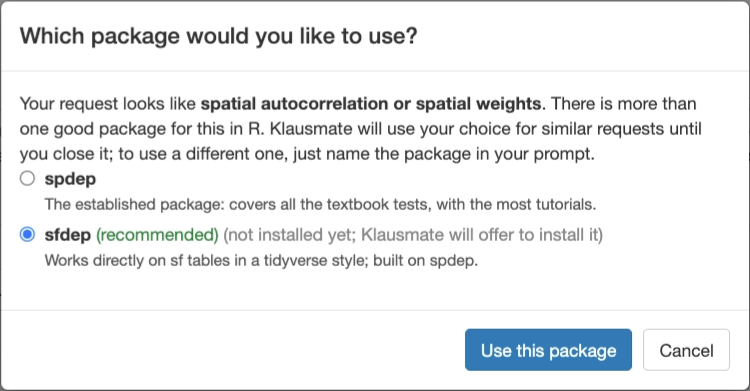
Take some time to read the code and form a broad understanding of it before you proceed.
Nest, press Run.
In my example, above, the sfdep package needs installing. Please be patient if it, or any other package, is installed.
The results appear in the R output window. Can you interpret them? Is the pattern of change getting stronger or weaker over time?
Try pressing Explain with the R output window still in focus. Compare your own interpretation of the results with what is generated.
Measuring spatial autocorrelation at more aggregate scales
Type the following into Your prompt and Ask for Code
Aggregate the data to make comparable calculations at the MSOA, ward and constituency levels.Again, take some time to read the code and form a broad understanding of it before you proceed.
How is the code handling aggregating the neighbourhood-level (LSOA) data values into larger area units (MSOAs, wards and constituencies?).
Is this the only (and best) way of doing it?
If not, what does this warn you about ‘blindly’ using AI to code without also employing your own expertise and learning?
Press Run and view the R output.
How do you interpret the results?
- When and at what scale was the pattern of spatial autocorrelation strongest?
- Is there any scale at which the pattern has strengthened over time?
- Are all the values statistically significant?
3.8 Fitting a null random intercepts model
Leaving aside the details for a moment, enter the following into Your prompt:
Fit a null random intercepts model for 2001-11 using the birmingham_lsoa_2001_2011 object, with the outcome variable y_change_asinh, and four geographical levels nested from the smallest to the largest: LSOA, MSOA, Ward and Constituency, using the columns lsoa, msoa, ward and constituency in birmingham_lsoa_2001_2011 for each level. Then calculate the percentage of the total variance at each of the four levels, with the shares summing to 100 per cent and the LSOA level treated as the residual variance.Before pressing Ask for Code tick the AutoRun Code box. Then press Ask for Code.
If asked, choose to use the lme4 package.
Scroll down the R output window to the bottom of the results.
Answer the following questions:
- At what scale (which geographical level) is the percentage highest?
- At what scale (which geographical level) is the percentage lowest?
Now go back to the previous R output—the easiest way to do this is using the back button to the left of the code tab.
- In 2001-11, at which scale was the Moran’s I lowest and statistically significant?
- In 2001-11, at which scale was the Moran’s I highest and statistically significant?
Variance measures how much the measured value—which here is $y_change_asinh$—varies from place-to-place.
If a higher percentage of the variance is found at the LSOA scale than at the MSOA scale then it suggests that LSOAs are more dissimilar to each other than MSOAs are.
That greater similarity between MSOAs is exhibited by their Moran’s I score, which says MSOAs are more like their neighbours than LSOAs are.
Modify Your prompt by hand to calculate comparable percentages from a null random intercepts model but for the period 2011-21.
How do the results compare?
Are the variations between LSOAs increasing or decreasing?
If you click in the Your prompt window when it is clear and press the up arrow on your keyboard, it will return to the previous used prompt.
Gathering the results into a publication quality plot
Raw R output is useful for personal use but rarely of a sufficient quality if you are intending to present or publish the results. Let’s gather some of our analysis into a higher quality table. Enter the following into Your prompt and Ask for Code.
Gather the percentages from the last two null random intercepts models and present them in a publication-quality table, with the geographical levels as the rows running from the lowest level (LSOAs) to the highest (constituencies). The columns should give the name of each level and then the percentage of variance at that level for the two time periods, taking the variance partitioning coefficients from each null model, rounded to one decimal place, with the 2001–2011 model taken from birmingham_lsoa_2001_2011 and the 2011–2021 model taken from birmingham_lsoa_2011_2021. As a further row at the bottom, please include the total variance for each period, given as the raw sum of the level variances to two decimal places and labelled as such.The R output can be expanded by clicking on its thumbnail. Copy table allows you to paste the table into programs such as Word.
Although the percentage of the variance (the differences between neighbourhoods) has increased at the LSOA level from 2001-11 to 2011-21, the total variance has decreased. In other words, if you want to find differences between places in what has been measured, then, increasingly, you need to look at the LSOA scale but, even there, they are harder to find because they are becoming less pronounced.
Copying the table will try and preserve its formatting but it is possible some might be lost requiring some further tidying-up in the receiving software.
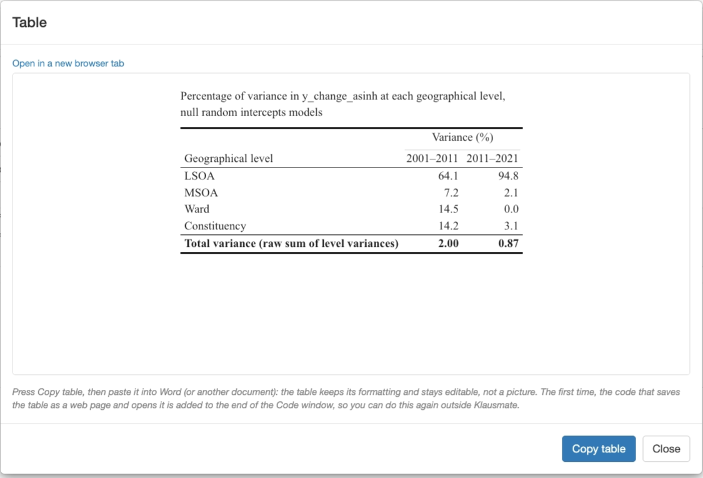
3.9 Multilevel models
The null random intercepts models above are a simple form of multilevel model: multilevel because they contain multiple grouping levels (in our example, geographical but they do not have to be); null because they include only the outcome variable (a \(Y\)) without relating it to any explanatory/predictor variables (no \(X\) variables are included); and random intercepts because they allow that the average value of the \(Y\) variable can vary from one group to another (so, from place-to-place in our models)—each group has its own intercept (average). Calling those random relates to how they are conceived and treated statistically.
To show, in broad terms, how it works, Clear Code in the Code window, copy and paste the following into instead, and press Run.
require(ggplot2)
ggplot(data = birmingham_lsoa_2001_2011,
aes(msoa21cd, y_change_asinh)) +
geom_boxplot() +
stat_summary(fun = mean, geom = "point", shape = 18, size = 3,
color = "red") +
geom_hline(yintercept = mean(birmingham_lsoa_2001_2011$y_change_asinh),
col = "dark blue", linewidth = 2) +
theme_minimal() +
theme(axis.title.x = element_blank(),
axis.text.x = element_blank())The R output shows a boxplot, where each box represents a group—each is an MSOA—and the ‘whiskers’ represent variation in the y_change_asinh (the \(Y\) variable) present within that MSOA, at the LSOA level (the observartions are at the LSOA level but those observations are then grouped by MSOA).
The solid red line is the overall mean for the data—the overall intercept level.
The red diamond shapes are the mean values for each group—in effect, the group level intercepts.
So, to repeat, what we have are the overall intercept and the group level intercepts. It is the group level intercepts, when estimated by the multilevel model, that are referred to as the random intercepts.
Looking at the boxplots, what we can see is variation between the groups (they do not all have the same average), as well as within the groups (the observations vary around the average).
An extension to all this is to calculate the random intercepts at each level of the model simultaneously and to do so in a way that works out how much they add to or subtract from the intercepts at the other levels of the model. This means you can estimate a predicted value of y_change_asinh at different levels and for different groups in the model—for MSOAs, Wards and Constituencies.
That becomes more complicated than drawing boxplots for each level. One difference between the boxplots and the model is the red diamonds (the averages) that you saw at the MSOA level make no allowance for what is happening at the other levels of the model. They are group averages but they are group averages that do not add to or subtract from what is happening at other levels of grouping.
Nevertheless, the idea is simple enough—take advantage of the group structures so what is being measured can vary within and between groups at the various levels of the model, thereby gaining an understanding of which groups, and which levels, are the ones of most interest.
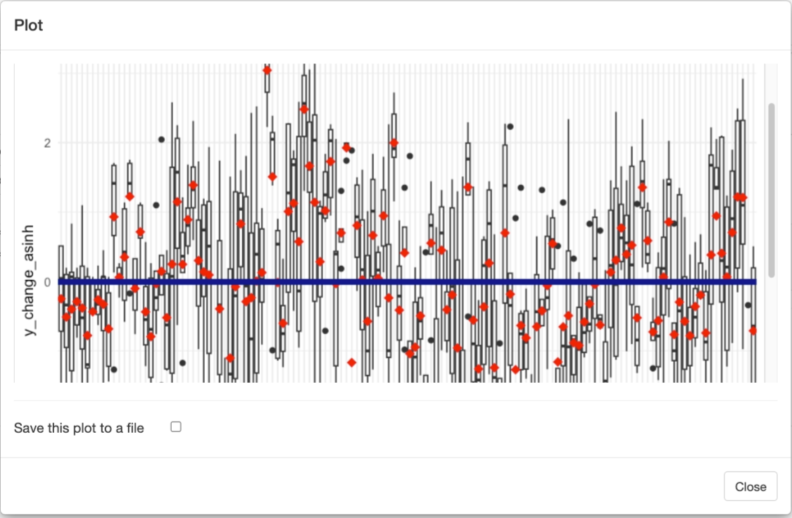
A random intercepts model with a predictor variable
Deselect the contextual object birmingham_lsoa_2011_2021 [sf] by clicking on the tick box alongside it. That box will be shown with a cross and the name of the object will be struck through.
Enter the following into Your prompt and Ask for Code.
Extend the null random intercepts model for 2001-2011 to now include the predictor variable, pct_ba_2001, with the model fitted on birmingham_lsoa_2001_2011 and the four levels and their grouping variables taken from the existing null random intercepts model for the same period. Calculate the percentage of the variance at each of the four levels before and after the inclusion of the predictor variable, presented as a table of the proportion of total variance at each level, and include the full regression output showing the measured effect of pct_ba_2001 on y_change_asinh, including the coefficient and its standard error.The model explores whether:
(\(Y\)) A change—over the period from 2001 to 2011—in the share of the total Black African population of Birmingham that lives in each of its neighbourhood LSOAs, is related to (\(X\)) what percentage of the LSOAs’ population was classified as Black African in the 2001 Census. This is a linear regression style relationship.
Whether you need to raise or lower the regression line—the average straight line relationship between \(Y\) and \(X\)—for individual MSOAs, Wards and Constituencies to get a better estimate of the change that happened within them; in other words, whether some consistently have added or decreased change, regardless of the amount of \(X\) (so the better prediction of \(Y\) is not simply \(X\) but \(X + \text{'a bit more'}\) or \(X - \text{'a bit more'}\) where the \(\text{'bit more'}\) varies from place to place).
The concept of homophily suggests that people tend to bond and form relationships with people who are similar to themselves. If this applies to where people live and that is linked to a person’s ethno-cultural heritage then we might expect neighbourhoods where a higher percentage of their population was Black African in 2001 to attract an increased shared (so a positive change) in the Black African population from 2001 to 2011. Expressed more formally:
\(H_0\): there is no evidence of a relationship between \(Y\) and \(X\) in the model
\(H_1\): as \(X%\) increases, so too does \(Y\)
Look at the results of the model. Is there evidence to support \(H_1\)?
Visualising the model
The model is easier to understand by visualising the lines it is fitting to the data. We will look at these at the Constituency level simply because it is easier—there are fewer constituencies then there are Wards or MSOAs so fewer lines to show on the plot.
Type the following into Your prompt:
I want to draw a scatter plot of the linear relationship between y_change_asinh and pct_ba_2001, using all rows of birmingham_lsoa_2001_2011, with all points in a single neutral colour, and with a straight black line showing the overall relationship taken from the fixed intercept and slope of the random intercepts model of y_change_asinh on pct_ba_2001, which has LSOA Constituency as the random effect and also includes Wards and MSOAs as groups. For each Constituency in birmingham_lsoa_2001_2011, I want a separate grey line parallel to the black line, positioned above or below it according to that Constituency's random intercept from the same model, and each grey line should span the full range of pct_ba_2001. Every LSOA should be drawn, the axes should be labelled with the variable names y_change_asinh and pct_ba_2001, and there should be no title. The plot should be interactive in a way that allows the user to click on the line in the chart and see the constituency name.Ask for Code and, if required, press Run.
The darkest line in the plot is like a standard regression line. Think of it as the overall relationship between the \(Y\) and \(X\) variables.
The other lines shift that overall relationship upwards or downwards to better fit each constituency. Hovering my mouse over the highest line shows me it is associated with the Birmingham Ladywood constituency. All things being equal, the amount of change is expected to be greater (more positive) here than for any other constituency.
Go online and find out more about Birmingham Ladywood constituency. Does what you learn ‘make sense’ given what the model shows?
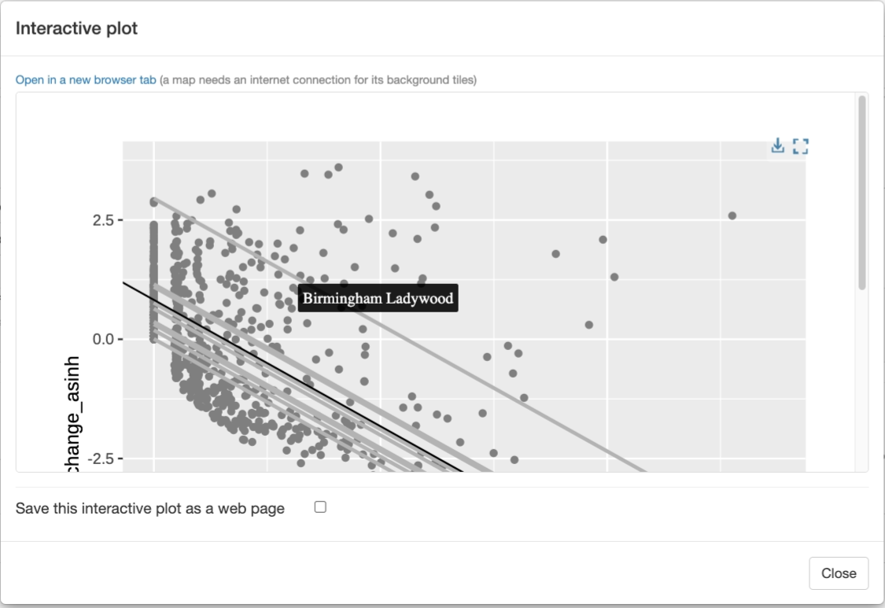
A random intercepts and random slopes
At the moment, only the intercept (the position of the line) varies between groups at the various levels of the model, which is why the lines for all Constituencies are parallel. We can remove this constraint and allow their slopes to vary too.
Try the following:
Extend the previous plot, using the same data, birmingham_lsoa_2001_2011, and still at the constituency level, but now allowing the slope and intercept of the line to vary by constituency by fitting a random intercepts and slopes model, keeping the same response and predictor as the previous plot, with all constituencies shown on one set of axes and one fitted line per constituency.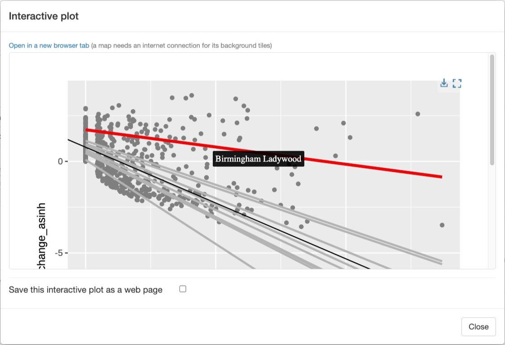
Caterpillar plots
We have visualised the random effects as the constitueny levels but, in the model, there were fitted for MSOAs and Wards too.
Try the following:
Draw caterpillar plots for the MSOA, Ward and Constituency levels, using birmingham_lsoa_2001_2011 as the data, and arrange them in a 2 by 2 lattice with the fourth cell left empty. For each group, the random effect is calculated as its random intercept plus the random slope at the mean of the predictor variable. Order the groups within each plot by ascending estimated effect, show all groups, and draw 95% confidence intervals around each estimate.Caterpillar plots are used to show the differences within groups and whether any observations (whether any MSOAs, Wards or Constituencies) have an uptick or downtick in the expected amount of the \(Y\) variable that is statistically different from zero. Please with a confidence interval that spans zero do not but there are places at the MSOA, Ward and Constituency levels with a group effect, meaning their LSOAs have more or less of the \(Y\) variable than is otherwise expected.
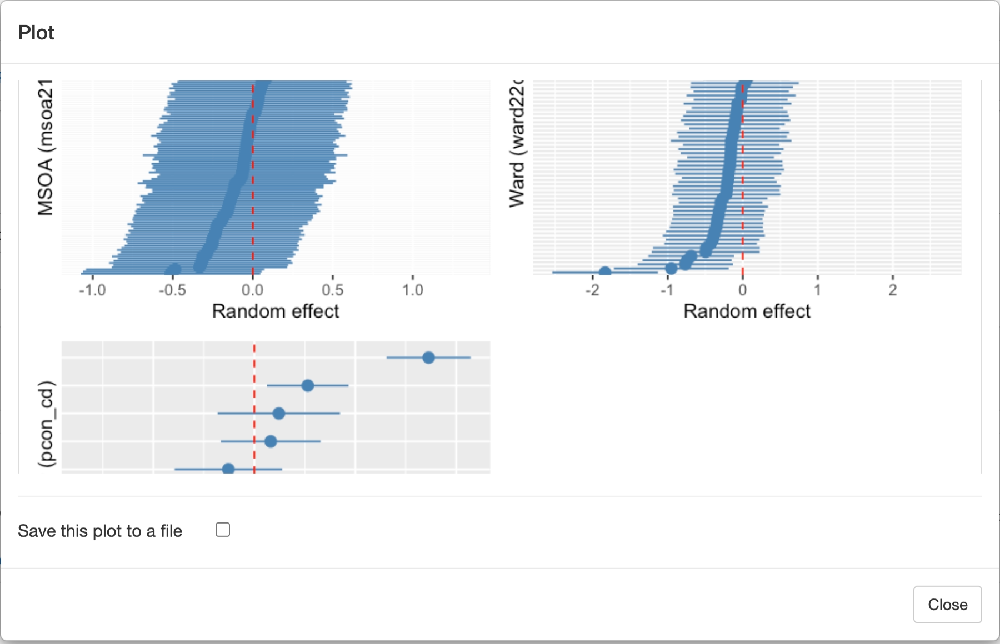
Mapping the random effects
The multilevel modelling we are using is geographical. It is based on neighbourhoods grouped into a geographical hierarchical. That means we can map the results.
Try:
Create a map of the birmingham_lsoa_2001_2011 data showing the MSOA-level effect for each LSOA, calculated as the random intercept plus the random slope at the mean of the predictor variable, using the MSOA identifier column and the LSOA identifier column in birmingham_lsoa_2001_2011 to link each LSOA to its MSOA (default: columns named MSOA and LSOA if present, otherwise the first matching code columns). Each LSOA should be coloured by its MSOA's effect, with the fill and borders in the same colour. The class labels should be rounded to 2 decimal places. Use a diverging colour palette for the fill running from low to high values, with red for negative values, white at zero and blue for positive values, so that positive and negative effects are clearly distinguished (default: a red-white-blue diverging scale with white at zero). Divide the values into 6 map classes in total using equal intervals with zero forced as a break, with the breaks calculated from all values in birmingham_lsoa_2001_2011 (default: breaks calculated from all values in birmingham_lsoa_2001_2011).Which MSOAs appear to have ‘inflated’ expected values of the \(Y\) variable, and which ‘deflated’ values?
What happens if you redraw the map, this time treating MSOAs with insignificant random effects as white, NA values?
3.10 Prompts matter!
An important ‘take away’ from this tutorial should be that prompts matter—phrase them badly and poorer outcomes will arise. The same is true when using Large Language Models more generally.
It is an argument for why learning how to code and having subject expertise to guide the process remains important.
Earlier in this tutorial we allowed the code to AutoRun after being generated. In practice, this should be discouraged. Remember, the goad of Klausmate is to help you learn code, not to avoid it.
3.11 Please provide feedback
After you have spent some time using Klausmate please provide feedback at Feedback on Klausmate – Fill in form. It will help guide any future development and use in teaching. Thank you.